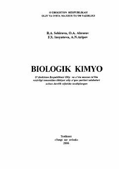

BKTibbiyot oliy o'quv yurtlari uchun mo'ljallangan biologik kimyo bo'yicha fundamental darslik.
Ushbu darslik tibbiyot oliy o'quv yurtlari talabalari uchun mo'ljallangan bo'lib, biologik kimyo fanining nazariy va amaliy asoslarini qamrab oladi. Kitobda oqsillar, nuklein kislotalar, uglevodlar va yog'larning tuzilishi, funksiyalari hamda metabolik jarayonlarning buzilishi bilan bog'liq kasalliklar batafsil yoritilgan.